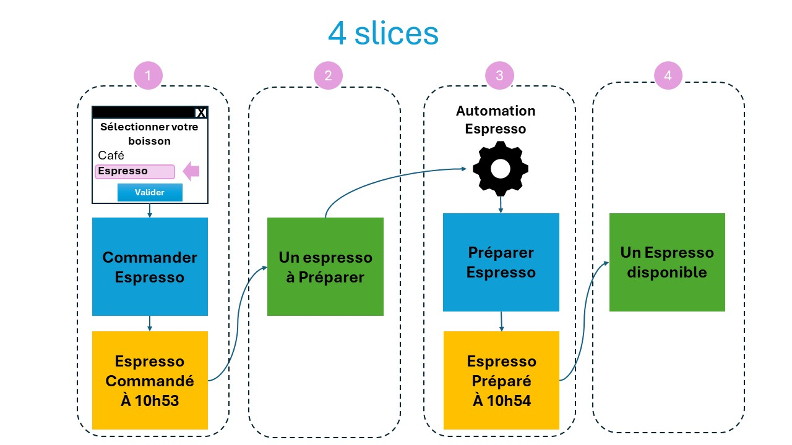

Le premier modèle
Il s'agit de faire un simple espresso avec une machine automatique. L'utilisateur sélectionne sa boisson - pour ce chapitre, cette histoire-là, on a choisit un espresso. Café, Latte, Capuccino, etc. sont d'autres chapitres car ce sont ces processus différents. L'espresso est préparé.
Le chapitre - Préparation d'un espresso

Regardons de plus près
Analysons
Nous avons 4 pas: le terme est "slices" :
- C'est un changement d'état du système - un espresso est commandé à 10h53 - C'est un fait
- C'est l'état du système - un espresso a été commandé; la décision à prendre est de la préparer
- C'est un changement d'état du système via une automatisation - l'espresso a été préparé à 10h54 - C'est un fait
- C'est l'état du système - un espresso peut être maintenant consommé
Nous avons utilisé 3 des 4 patterns d'Event Modeling (Changement d'état, vue de l'état, automatisation)
Pour en savoir plus sur les 4 patterns, consultez la page 4-patterns.